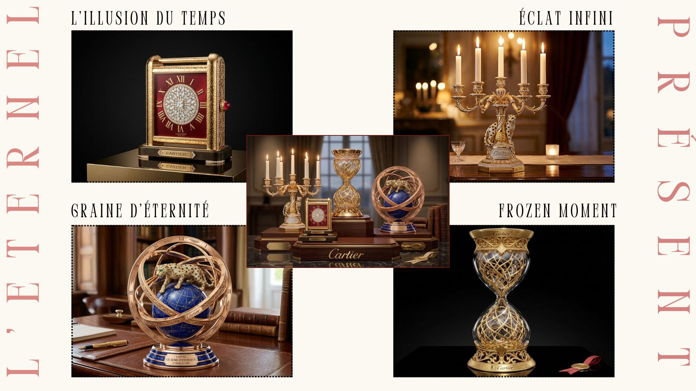
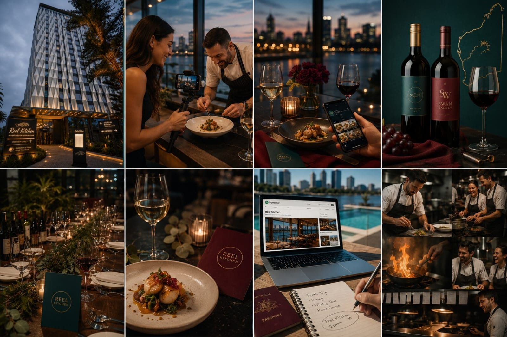
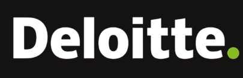
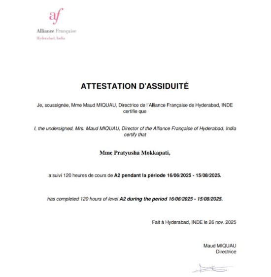
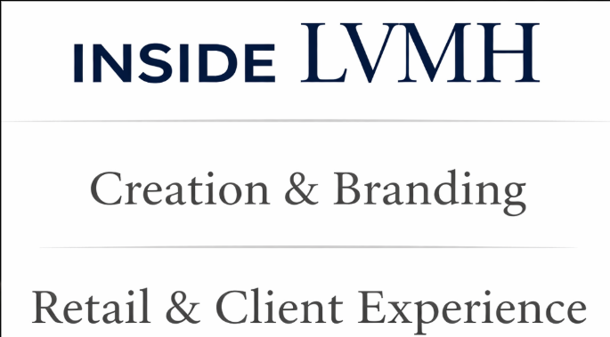
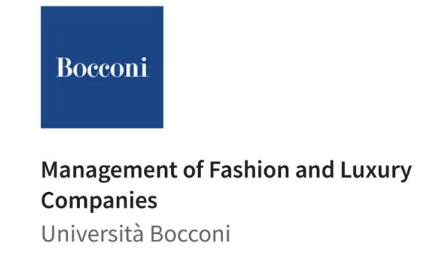
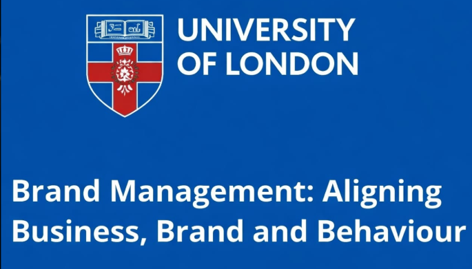
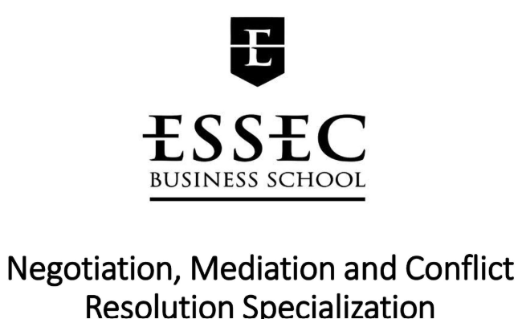

Assisting legacy brands in navigating modern shifts across client experience and brand evolution. Luxury management student with global CRM experience.
Inspired by witnessing innovative products struggle to gain recognition despite their quality and impact, I transitioned from consulting to luxury marketing to understand how strong brands create lasting value. Through my work with an organic food startup and observing my father's biomedical innovations, I realized that exceptional products alone are not enough. Success depends on positioning, equity, storytelling, and the ability to build meaningful consumer connections. This interest led me to luxury, an industry that excels at creating desire and emotional resonance. Leveraging 3.8 years of experience at Deloitte in CRM and global customer engagement, I have a strong understanding of consumer behavior, brand strategy, digital marketing, and luxury market dynamics.
Fragment is a sustainable luxury venture that transforms personal memories into bespoke fragrances using AI and artisanal French perfumery. Blending emotion, data, art, and science, each scent becomes a unique olfactive expression of a client's story.
Richard Mille positions itself as a symbol of unwavering stability in an increasingly chaotic world, where both external disruption and internal pressure have become everyday realities. By showcasing the watch enduring environmental extremes and human stress alike, the campaign elevates Richard Mille from a luxury timepiece to a powerful emblem of resilience, control, and reliability under pressure.
A privacy first storytelling experience that allows Aston Martin owners to intentionally capture and preserve meaningful driving moments as cinematic memories, entirely on their terms. With owner controlled recording, local storage, and no passive data collection, it reinforces Aston Martin's values of discretion, exclusivity, and emotional ownership.
An immersive XR luxury experience that engages all five senses, allowing clients to design and experience their Pagani through mixed reality, haptics, spatial audio, adaptive scent, and biometric personalization. The journey extends beyond delivery with a private XR vault that preserves the car’s creation story, craftsmanship, and the client’s unique sensorial profile.
Developed the "Eternal Time" capsule collection concept for Cartier, reimagining time as an object to be preserved rather than measured through four limited edition decorative pieces. Created the product concept, pricing strategy, and economic feasibility framework, positioning the collection as a brand equity and client engagement initiative that extends Cartier's timeless craftsmanship beyond jewellery and watches.

Developed a strategic marketing proposal for DoubleTree by Hilton focused on increasing restaurant visibility both physically and digitally, strengthening local partnerships, and enhancing guest engagement through experiential and digital initiatives. Several recommendations were positively received by the management team and are now being implemented as part of the property's ongoing marketing efforts


Led global CRM and customer engagement initiatives for industry-leading organizations, including Eli Lilly & Co. and Moderna, where I contributed to building an omnichannel contact center from the ground up. Leveraged customer insights, audience segmentation, and campaign strategy to deliver personalized experiences across global markets. Expertise in CRM operations, lifecycle marketing, omnichannel campaign management, stakeholder collaboration, and crafting seamless customer journeys across email, phone, and SMS touchpoints.
Supported brand communication and digital engagement strategies through content creation, storytelling, and audience-focused campaigns that reinforced brand identity. Built a foundation in luxury marketing principles, consumer engagement, and creating meaningful brand experiences through strategic content.




